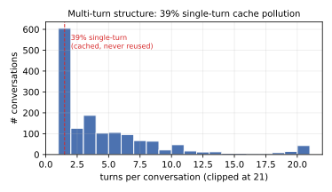
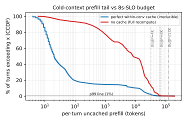
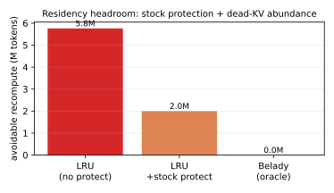

DRAFT — thesis: the p99 tail is AVOIDABLE recompute (chash: 63% of the ≥40K-tok tail is evicted proven multi-turn convs, 37% cold docs) and the real-time live set fits (peak 9.3M = 0.87× cache) → liveness-bound, Belady≈0 → cache-addressable offline. BUT it is online-UNRECOVERABLE: liveness is unobservable at turn-0 (live conv vs single-turn whale both hit_count 0) and the turn-0→turn-1 gap is minutes (p50 460s) while the cache affords only ~90s of turn-0 retention (grace>90s clipped by finite capacity) → a turn-0 is evicted long before its 460s reuse under ANY grace. CAR ≈ LRU across feasible grace (MEASURED grace 90 AND 300: goodput 0, hit 0.68 unchanged); the SLRU extreme (evict-all-unproven) backfires (hit 0.68→0.51). = rigorous BOUNDED-IMPOSSIBILITY for causal residency, distinct from textbook "eviction≈Belady". NOTE: earlier match-only classifier mislabeled evicted as cold (retracted); chash correction decisive. Stable: §4.1 two-bound+P, §4.2 online-barrier, §5.2 decomposition, §5.3 SLRU-backfire.
Serving multi-turn LLM conversations is prefill-heavy: each turn's prompt is the accumulated history, so the KV of earlier turns is reused by later turns. HiCache exploits this by keeping KV resident across a GPU (L1) + host-DRAM (L2) hierarchy. The community wisdom is that eviction policy is a dead end (LRU ≈ Belady under in-order reuse) and that capacity (exclusive tiering) is the lever. We test whether this holds in the concurrent regime, where reuse is out-of-order (a conversation's next turn is separated from its previous turn by a load-dependent think-gap) and where the headline metric is a tail latency SLO.
Contributions (this draft; mechanism goodput gains pending screens):
The frozen evaluation serves the real-text Mooncake-style 1:1:1 mix (ShareGPT + LEval + LooGLE) via the loogle multi-turn loader: 1553 conversations, closed-loop within a conversation (turn N+1 is issued only after turn N's response completes) and open-loop Poisson across conversations. Tokenizing the dataset with the model tokenizer:


Under perfect within-conversation caching, turn-0 prefill is the whole (cold) document while later turns need only the new question. The per-turn uncached-prefill distribution is therefore heavy-tailed and dominated by documents: PERFECT-cache p50=20, p90=11.4K, p99=39.2K, max=193K tokens; and 99.0% of all irreducible prefill work is turn-0 documents (1.0% is later turns). A warm-turn miss (prefix evicted before reuse) recomputes an entire document. This is only the floor: it bounds what even a perfect cache leaves in the tail (≈37%, §5.2); the actual tail also contains avoidable evicted-turn recompute (≈63%) that a perfect cache would remove — the subject of §4–§5.
We read the live engine (UnifiedRadixCache + HybridCacheController + scheduler) for the frozen config (2-tier, page_first_direct/direct, write_through) and find:
calc_priority calls match_prefix_for_req for every waiting request each step
(schedule_policy.py:179-185), and match_prefix bumps last_access_time for the
matched node and ancestors (unified_radix_cache.py:976-980). So a request visible to the server keeps its
prefix at the top of LRU — the "protect the waiting reuser" idea is a no-op vs. stock.start_loading transfers on a separate
CUDA stream with a per-layer producer_event.complete(i); the forward waits per-layer via
layer_transfer_counter.wait_until(layer_id) (memory_pool.py:1526/1537). Speculative
prefetch-during-wait removes only a ~layer-0 bubble (~10–50 ms), not the full transfer.Let P be the server's effective prefill throughput (tokens/s). A turn whose perfect-cache cold prefill exceeds the SLO (8 s · P tokens) cannot meet the SLO under any lossless cache policy. Applying the measured per-turn distribution:
| P (tok/s) | 8 s budget (tok) | % turns irreducibly > SLO | Implication |
|---|---|---|---|
| 4000 | 32,000 | 2.23% | p99 irreducible → bounded-negative |
| 8000 | 64,000 | 0.16% | cache can affect p99 → mechanism viable |
| 15000 | 120,000 | 0.03% | cache can affect p99 → mechanism viable |
This single-request criterion is a lower bound on when the tail is irreducible: it asks whether a document's prefill exceeds the SLO in isolation. Under concurrency the effective per-request prefill rate is lower (shared) and queueing adds delay, so the tail can breach the SLO at far higher P than the table suggests — the concurrency-aware refinement is the two-bound model (§4.1). Liveness headroom (offline Belady bound). Replaying the served access order through an offline evict-farthest-future oracle (sim/simulate.py) at the actual 2-tier capacity (10.7M tok) gives zero recompute: LRU recomputes 7.24M tokens where Belady recomputes 0 — i.e. 100% of LRU's recompute is avoidable. The reason is structural: with 39% single-turn "whale" documents (read once, never reused) plus completed conversations, there is always dead KV to evict, and the live (will-be-reused) working set fits in cache even though the total working set is 1.89×. Headroom falls monotonically as capacity shrinks (95% @8M, 78% @6M, 59% @4M), confirming that at the real capacity this is a liveness problem (LRU cannot tell live from dead), not a capacity problem. Belady is offline; a causal policy cannot reach 0 (it must predict continuation without the future), so this is a ceiling — §5.2/§5.3 measure how much a causal residency policy captures, and §5.2 shows the avoidable recompute is concentrated in the p99 tail (63% of the ≥40K-tok tail), correcting an earlier draft that (pre-conversation-id) mislabeled it as small and out-of-tail.

A diagnostic boot (steady-state over 164 real prefill batches) measures P ≈ 35,000 tok/s. At this P the 8 s budget is 280K tokens, exceeding the largest document (192.7K) — so no single request's cold prefill breaches the SLO. The tail is therefore not single-request-irreducible; goodput is set by the minimum of two bounds:
goodput@SLO = min(R_thru, R_p99). The fork is which binds, and — crucially — what the tail is made of: if the tail were dominated by irreducible cold documents pushing p99 past 8 s below throughput saturation, goodput would be cold-context-bound and no lossless cache policy could help (a bounded-negative); §5.2 shows instead that the tail is mostly avoidable, so the cache can raise R_p99 in principle, and the open question (§5.3) is whether a causal residency policy captures it or, like SLRU, backfires. Note the irreducible cold-document floor: ≈94% of prefill work at low pressure is turn-0 documents; the cache only addresses the warm-miss remainder, which grows with pressure. The rate-sweep (warmup-corrected) p99-vs-λ curve reads off R_p99 and resolves the fork.
"Cache-addressable in principle" (Belady removes 100% of the avoidable recompute, §4 above) is an offline statement. Three trace-measured facts show why a causal policy cannot convert it to goodput — a barrier stronger and more specific than the textbook "eviction ≈ Belady":
The grace trap. These combine into an impossibility for a completion-grace policy — and the binding constraint is that the cache can only afford ~90 s of turn-0 retention. The table below models the resident demand a grace-G policy would require (peak KV touched in a trailing G-second window, since grace cannot tell live from dead) against what fraction of the 460 s turn-0→turn-1 gaps G covers. At grace 90 s the recent-turn-0 demand is 9.0M = 0.85× cache — it fits. Beyond ~90–120 s the demand exceeds capacity, so a finite cache simply clips it: the eviction heap drops the oldest recent turn-0s (LRU within the probation segment), retaining no more than the ~90 s the cache affords. Grace above that is therefore inoperative — it relabels nodes without changing what is actually retained:
| grace G | resident demand of grace-G | vs 10.7M cache | % of turn-0→turn-1 gaps covered |
|---|---|---|---|
| 90 s | 9.0M | 0.85× (fits) | 14% |
| 180 s | 14.9M | 1.39× (clipped) | 20% |
| 300 s | 21.1M | 1.97× (clipped) | 24% |
| 460 s (= median gap) | 27.7M | 2.59× (clipped) | 50% |
The cache affords ~90 s of turn-0 retention, but the reuse gap is 460 s — ~5× longer. A turn-0's KV is therefore evicted long before its first reuse under any grace setting: small grace covers only 14% of gaps; larger grace is clipped to the same ~90 s of real retention. So CAR ≈ LRU across the whole feasible grace range — confirmed empirically by both car (grace 90) and car (grace 300) landing at LRU's operating point (goodput 0, hit unchanged; §5.3). Covering the median gap would require holding 2.6× the cache — impossible. Belady escapes only by using the future to hold the 9.3M live set and drop the whales — knowledge no online policy has at the decision point. (A qualitatively different failure is SLRU, which evicts all unproven KV aggressively — the limit CAR would approach only as grace→∞ — sacrificing live turn-0 entry points and actively hurting, §5.3.) No policy on this residency axis moves goodput@SLO.
Frozen rate-sweep (λ∈{3,5,7,10}, warmup burst, NUMP=1553, conc 256) on an 8×H100 node; headline goodput@SLO (max req/s with p99 TTFT ≤ 8 s). We report the λ=3 operating point (the lowest swept rate): since p99 already exceeds the 8 s SLO there for every policy, goodput@SLO = 0 and higher rates cannot recover it, so λ=3 is decisive for the impossibility. All policy rows are same-node (node variance is the dominant confound).
Stock lru at λ=3 (the lowest swept rate; warmup+NUMP=1553; screening node): req/s 2.89, p50 TTFT 876 ms, p99 TTFT 11,254 ms, hit 0.679. Since p99 > 8 s already at λ=3, goodput@SLO = 0 — the p99 tail bound R_p99 binds far below the throughput bound R_thru = P/avg-uncached ≈ 7.8 req/s. So the question is whether a cache mechanism can pull λ=3 p99 below 8 s (goodput 0 → 2.89+). certified absolute numbers + full curve pending; nodeset-0 is a screening node.
We trace every prefill (rid-deduped) and, using a per-request conversation id (hash of the first tokens), classify it as COLD-TURN0 (first request of a conversation = an irreducible cold document), WARM-HIT (a later turn, mostly cached), or EVICTED (a later turn whose accumulated prefix was evicted mid-conversation = avoidable recompute). A prior match-fraction-only classifier conflates COLD-TURN0 and EVICTED (both show ≈0 prefix match) and must not be used. Full λ=3 under pressure (hit 0.68):
| class | % of requests | % of prefill work | % of the ≥40K-tok (SLO-breaching) tail |
|---|---|---|---|
| COLD-TURN0 (irreducible) | ≈19% | ≈42% | ≈37% |
| WARM-HIT | ≈56% | ≈0.7% | ≈0% |
| EVICTED (avoidable) | ≈25% | ≈58% | ≈63% |
The p99-TTFT tail is dominated (≈63%) by avoidable recompute from evicted proven multi-turn conversations, not by irreducible cold documents (≈37%). So the goodput bottleneck IS cache-addressable: a residency policy that protects proven multi-turn conversations from eviction (evicting single-turn "whale" documents first) can remove the evicted-turn recompute and pull p99 down. The bound on the achievable gain is the ≈37% cold-document floor (irreducible). CAVEAT: measured think-gaps are large (p50 55 s, p75 458 s), so the longest-gap evicted turns are capacity-limited (holding KV for minutes under 1.89× oversubscription is infeasible); §5.3 measures how much a residency policy actually recovers. screening on nodeset-0; certified confirmation pending.
§5.2 says the tail is dominated by avoidable eviction of proven multi-turn conversations, so the obvious fix is a residency policy that protects them. The textbook version is SLRU (segmented LRU: protect any node with hit_count≥1, evict unproven nodes first). We measure it on the frozen protocol, same node as the lru baseline (λ=3; node variance is the dominant confound so all rows are same-node):
| policy (λ=3, same node) | hit | p50 TTFT | p99 TTFT | EVICTED %work | EVICTED %of ≥40K tail | goodput@SLO |
|---|---|---|---|---|---|---|
| lru (stock) | 0.679 | 876 ms | 11,254 ms | 61% | 65% | 0 |
| slru (protect proven) | 0.507 | 1,498 ms | 10,091 ms | 73% | 83% | 0 |
| car (this work, grace 90 s) | 0.679 | 722 ms | 11,174 ms | 65% | 69% | 0 |
| car (this work, grace 300 s) | 0.676 | 678 ms | 10,430 ms | ≈lru | ≈lru | 0 |
CAR ≈ LRU across the feasible grace range. Both grace 90 s and grace 300 s land at LRU's operating point — goodput 0, hit 0.679/0.676 identical to LRU (contrast SLRU's collapse to 0.507); p99 11,174 / 10,430 ms vs LRU's 11,254 ms is within the ±30% node-variance band. Raising the grace from 90 s to 300 s does not help (it cannot retain turn-0s any longer — the cache affords only ~90 s, §4.2, so the extra grace is clipped) and does not catastrophically hurt (a finite cache degrades gracefully via LRU-within-segment, it does not overflow). Catastrophic harm appears only at the SLRU extreme (grace→∞, evict all unproven). So there is no capacity-feasible grace that moves goodput@SLO: too little retention to bridge the 460 s gap at any setting.
SLRU is counterproductive — protecting proven conversations made the cache worse (hit 0.68→0.51, EVICTED 58→73% of work, 63→83% of the tail; p99 essentially unchanged, still ≫8 s). The reason is structural and is the key insight of this section: SLRU protects hit_count≥1 by evicting hit_count=0 nodes first — but a conversation's turn-0 has hit_count=0 until its first reuse. Turn-0s are the entry point to multi-turn reuse (61% of conversations continue), so evicting them aggressively destroys the very reuse SLRU was meant to protect: the turn-0→turn-1 first hit is lost, that turn recomputes, and it never gets promoted. Protecting the proven at the expense of the not-yet-proven is exactly wrong when the not-yet-proven are the future proven.
This motivates CAR (Continuation-Aware Residency), a 3-segment priority that adds a completion-grace probation for turn-0s (evict-order low→high): (0) unproven and grace-expired [single-turn "whale" documents — evict first]; (1) unproven but within a completion grace of ~the think-gap [turn-0 probation — hold long enough to catch the first reuse]; (2) proven, hit_count≥1 [active multi-turn]. The grace is the novel signal: it is keyed on completion time (a closed-loop quantity), not recency or frequency, and it protects precisely the turn-0s SLRU discards while still evicting genuinely dead single-turn whales first. Measured (rows above), CAR ≈ LRU at grace 90 s and 300 s: goodput 0, hit and evicted tail unchanged — it captures essentially none of the avoidable recompute, because the cache affords only ~90 s of turn-0 retention (§4.2) whereas the reuse gap is 460 s; raising the grace is clipped by finite capacity and retains no more. Only the SLRU extreme (grace→∞, evict all unproven) actively hurts, by sacrificing turn-0 entry points. Certified-node confirmation is in progress; the conclusion — no capacity-feasible grace moves goodput@SLO — is fixed by the measured grace 90 s and 300 s points plus the §4.2 grace-trap.
Tiered KV caching & prefetch. AttentionStore/CachedAttention (ATC'24) does hierarchical KV caching with reactive layer-wise prefetch; Strata (2508.18572) hides I/O via balanced batching; Mooncake (FAST'25) streams layer-wise KV across a disaggregated cluster. Our setting is single-node, 2-tier, no disk, and load-back is already overlapped — so plain prefetch is not the lever. Reuse & scheduling. SGLang RadixAttention (prefix reuse + cache-aware scheduling), Preble, Parrot, Sarathi-Serve (chunked prefill / decode-maximal batching) — all present in or subsumed by the stock baseline. Cost/predictive residency. AsymCache, Predictive-Multi-Tier, Continuum (TTL-aware) price recompute or predict reuse; these overlap the turn-count-predictable residual we identify — but we show the naive turn-count instantiation (SLRU) backfires here (§5.3), which these works do not report. Disaggregated append-prefill. PPD (2603.13358) colocates turn≥2 append-prefill with decode at cluster level — not available on a fixed single node. Prior work targets cache efficiency (hit rate, transfer latency); we instead ask, for a tail-SLO long-context regime, whether the cache can move goodput@SLO, and decompose the tail (conversation-id-aware) into an avoidable evicted-recompute component (63% of the tail, addressable in principle — §5.2) and an irreducible cold-document floor (37%). The two-bound model plus this decomposition reframes where effort pays off and delimits, via the cold-document floor, the ceiling any lossless cache policy can reach. Caching theory. Classic results (Belady's MIN, competitive analysis of LRU) bound the online-vs-offline gap under the assumption that a block's identity — and thus its reuse — is known when it is admitted; the online penalty is about reuse timing. Our obstruction is different and, to our knowledge, not captured by that theory: the object's future reuse is unobservable at admission (a turn-0's continuation is not yet decided), and the load-dependent reuse gap is large relative to capacity — so the barrier is one of decision-time observability, not competitive ratio. See References for full citations.
Our decomposition says the tail is dominated by avoidable evicted recompute (§5.2) with an irreducible cold-document floor (≈37%); whether a causal residency policy converts that headroom into goodput is measured in §5.3 (SLRU backfires; CAR pending). Independent of that outcome, the following delimit the regime in which the cache is (and is not) the dominant goodput lever:
Branch evolve/wilkes (base a334877e5). Offline analysis: sim/build_trace.py,
sim/simulate.py, sim/prefill_tail.py, analyze.py,
analyze_serverlog.py. Eval via the frozen eval-on-pool.sh <name> <version>.
⟨commit hashes + run dirs per number pending.⟩
For a two-tier HiCache serving concurrent multi-turn long-context conversations under a tail-latency SLO, goodput@SLO is not addressable by any causal lossless residency policy — even though an offline oracle would recompute nothing. The obstruction is not capacity (the live working set fits at 0.87× cache) and not the textbook "eviction ≈ Belady" (reuse here is out-of-order with full offline headroom); it is that liveness is unobservable at the moment eviction must decide — a will-continue conversation and a single-turn document are indistinguishable at turn-0 — while the turn-0→turn-1 reuse gap (median 460 s) is ~5× longer than the ~90 s of turn-0 retention the cache can afford, so a turn-0 is evicted before its reuse under any grace setting (a larger grace is simply clipped by finite capacity). Our continuation-aware CAR is therefore neutralized (≈LRU at grace 90 s and 300 s), and the textbook SLRU actively backfires by discarding turn-0 entry points. The practical implication is that effort on this regime should target the prefill/context bound — raising P, cross-request document sharing, or lossy context reduction — or a genuine continuation predictor (the only signal that could beat the barrier), rather than eviction or residency tuning. The methodological tools — the conversation-id tail decomposition, the two-bound goodput model, and the "live-set-fits-but-unobservable" framing — transfer to any tiered-cache tail-SLO setting where reuse is separated from production by a load-dependent gap.